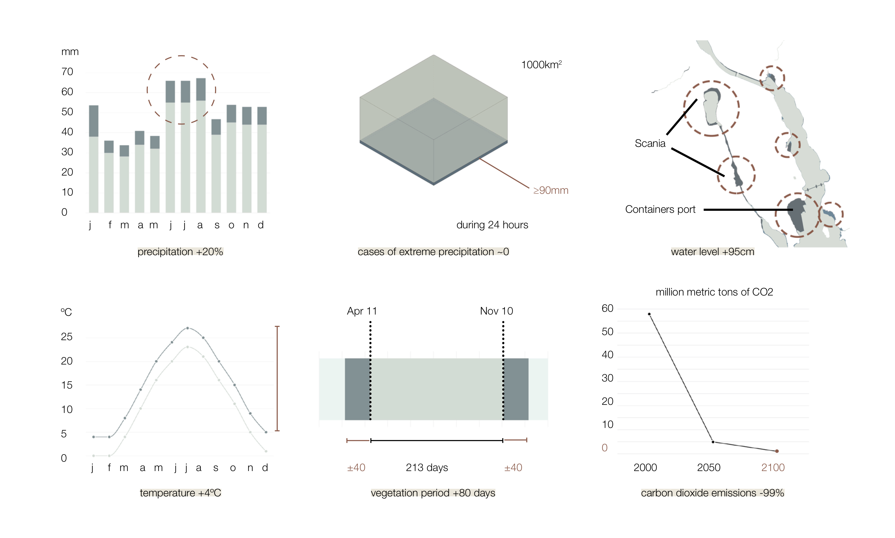

Harbour City
Master's Project
When analysing the climate change effects for Södertälje on 2100 according to the estimation made by SMHI, the consequences are not as impactful as for other areas of the world. However, about 200 million people are currently living within coastal flood plains. Södertälje will become a harbour city: a planned shelter for climate change for both types of refugees: inhabitants and immigrants. For this to happen, basic needs should be guaranteed: housing, food, health services, water, energy, clothing, learning opportunities and/or productive employment and leisure.

The focus of the project started on food security as 55% of Sweden’s food is imported, principally fish, and fruits and vegetables (that can only be produced during a part of the year). Only 14% of Södertälje would be needed to have the same area of greenhouses than in the Netherlands. The products will be exported to other parts of Stockholm by train while they are not needed in Södertälje and while Stockholm develops the same production system. Larger areas of greenhouses are developed next to stations to ease the transport of products.